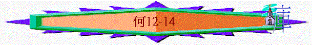

|
非人間的愛情－－怎能捨棄以色列 |
|||||||
|
怎能捨棄淫婦 |
怎能捨棄以色列 |
||||||
|
１－３ |
４－１４ |
||||||
|
去娶淫婦 |
追討淫行 |
再愛淫婦 |
以色列 的罪行 |
以色列 的被罰 |
耶和華 的無奈 |
耶和華 的審判 |
耶和華 的眷愛 |
ＩＩ．怎能捨棄以色列（４－１４）
Ｄ．耶和華的的眷愛（１１－１３）
１．辜負主恩仍憐愛（１１：１－１１）
２．詭詐行惡仍拯救（１１：１２－１３：１４）
ａ．愛行詭詐（１１：１２－１２：１１）
i．選民的詭詐
（１）對神：說謊
[以法蓮用慌話，以色列家用詭計圍繞我，猶大卻靠神掌權，向聖者有忠 心。〕（１１：１２）
（２）對人：不守約
[以法蓮吃喫風，且追趕東風，時常增添虛謊和強暴，與亞述立約，把油送 到埃及。](１２：１)
[以法蓮是商人，手�埵雩瑗B的天平，愛行欺騙。](１２：７）
（３）對己：自欺
〔以法蓮說，我果然成了富足，得了財寶，我所勞碌得來的，人必不見有甚 麼不義，可算為罪的。〕（１２：８）
ii．雅各的回轉
（１）雅各的問題：
（ａ）詭詐
（ｂ）靠己
〔．．．．必照雅各所行的懲罰他，按他所作的報應他。〕
（１２：２）
（２）耶和華的扭轉
（ａ）推雅各去到最高峰（參考創３２：２２－２５）
〔．．．．壯年的時候與神較力，與天使較力並且得勝．．．．〕
（１２：３－５）
（ｂ）一下子卻令雅各去到最軟弱
〔那人見自己勝不過他，就將他的大腿窩摸了一把．．．．〕
（創３２：２５）
（３）以色列的更新
（ａ）不再自持
〔．．．．哭泣懇求．．．．〕（１２：４－５）
（ｂ）以神為神
〔．．．．在伯特利遇見耶和華．．．．〕（１２：４－５）
（創２８：１９－２１；３５：１－３，９－１５）
（４）何西阿的呼籲
〔所以你當歸向你的神，謹守仁愛、公平、常常等候你的神〕（１２：６）
ｂ．忘恩負義（１２：１２－１３：１３）
特點：〔從前．．．．曾．．．．但．．現今．．．．〕
i．從前得神保守－－－－－但現在惹神發怒（１２：１２－１４）
ii．從前得神抬升－－－－－但現在增添偶像（１３：１－３）
iii．從前得神福氣－－－－－但現在忘記恩主（１３：４－８）
iv．從前得蒙應允－－－－－但現在與神反對（１３：９－１３）
ｃ．神仍拯救（１３：１４）（林前１５：５４－５５）
３．悖逆背道仍復興（１３：１５－１４：８）
ａ．悖逆的後果：（１３：１５－１６）
ｂ．先知的呼籲（１４：１－３）
＊回轉之路
i．認識自己
ii．求主赦免
iii．以後不犯
ｃ．神的復興（１４：４－８）
i．頑梗的惡疾－－－－神必醫治
〔我必醫治他們背道的病．．．．〕（１４：４）
ii．破裂的關係－－－－神必修好
〔．．．．甘心愛他們，因為我的怒氣向他們轉消〕（１４：４）
iii．己死的生命－－－－神必重建
〔我必向以色列如甘露，他必如百合花開放，如利巴的樹木扎根．．．〕 ：５－６）
iv．失去的福份－－－－神必償回
〔．．．．他的榮華如橄欖樹．．．．〕（１４：６）
〔曾住在他蔭下的必歸回．．．．〕（１４：７）
〔．．．．發旺如五縠，跚花如葡萄樹．．．．〕（１４：７）
總結（１４：９）
智慧人－－－可以明白－－－並行主道－－－不會跌倒
愚味人－－－不能領會－－－卻行惡道－－－完全跌倒